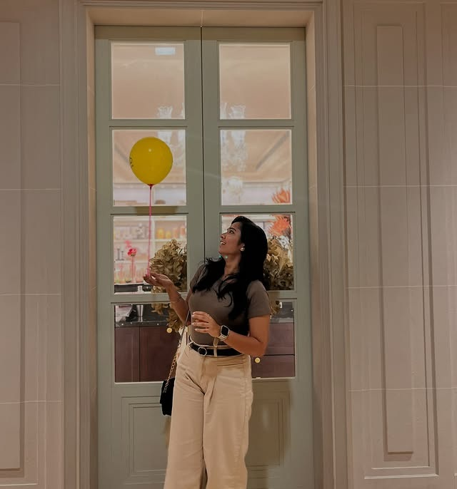

UX Designer & Researcher
I'm Karunya — a UX/UI designer from Bangalore with a background in Data Science. I turn research and real user needs into interfaces that actually make sense to use.

Selected Work
UX Research · UI Design · Webflow
Fahm is an online learning platform built for Arabic language education. The challenge was designing a bilingual experience that felt natural for both Arabic and English speakers — balancing RTL/LTR layout switching, accessibility, and a visual identity that respected cultural context without falling into stereotypes.
UX Strategy · Web Design · Brand Communication
Mowito builds autonomous navigation software for robots. The design challenge here was making highly technical robotics capabilities feel approachable and credible to enterprise buyers — translating complex specs into a clean, trustworthy web presence that communicates innovation without alienating non-technical stakeholders.
UI Design · Visual Hierarchy · Webflow
A luxury lifestyle retail platform requiring a delicate balance between aspirational aesthetics and clear product discovery. The design focused on building trust through visual refinement — careful typography choices, editorial-style layouts, and a browsing experience that lets the products breathe without feeling cold or inaccessible.
UX Research · Web Design · Webflow
Designing for an industrial steel manufacturer meant solving a very unsexy but important problem — making product catalogs, certifications, and inquiry flows actually usable for procurement managers who have no patience for poor information architecture. This project sharpened my understanding of utility-first design: when the user's job is urgent, clarity is the only aesthetic that matters.
Process
Good design isn't about how it looks at the end — it's about the questions asked at the beginning. Here's what my process actually looks like, from the first conversation to the final handoff.
01 — The Problem
Arabic is written right-to-left. English is left-to-right. Most bilingual platforms pick one direction and force the other language to awkwardly adapt. For an educational platform where language itself is the product, this wasn't acceptable. Users needed to feel like both languages were first-class citizens of the same design system.
02 — Research & Discovery
The research phase began with five user interviews across two user groups — Arabic native speakers learning in English, and English speakers studying Arabic. Key insight: users didn't switch languages arbitrarily. They switched based on context — explanations in their native language, exercises in the target language. This behavioral pattern became the anchor for the entire IA.
Journey mapping revealed three pain points in competing platforms:
03 — Design Decisions
Rather than designing two separate UIs, the solution was a single component library that responded to the active language context. Every directional element — chevrons, progress bars, navigation flows — was built to flip. Typography was handled by pairing a high-legibility Arabic typeface with Inter, ensuring visual harmony across both scripts at every font size.
Color and iconography were kept culturally neutral — warm without orientalist clichés, modern without feeling imported.
04 — Wireframes & Prototyping
The wireframing process started with low-fidelity paper sketches that mapped out the core learning flows — lesson browsing, exercise interaction, and progress tracking — for both reading directions simultaneously. Each sketch was drawn twice: once in an LTR configuration and once mirrored for RTL. This was deliberately tedious, but it immediately revealed assumptions baked into my own design instincts — things like icon placement, swipe direction for carousels, and where the eye naturally gravitates for navigation cues.
Mid-fidelity wireframes were built in Figma using an auto-layout-first approach, specifically so that direction flipping could be tested structurally before any visual design decisions were made. Every component was prototyped with two variants — not just mirrored visually, but reconsidered for cognitive flow. A progress bar that fills left-to-right in English doesn't just flip; the entire mental model of 'progress' shifts. The prototype tested whether users intuitively understood progress indicators in both directions, and the results led to using a radial progress indicator instead — which is direction-neutral by nature.
High-fidelity prototypes were built in Figma with interactive language switching. Users could toggle between Arabic and English within the same session, and the prototype responded with full layout flipping, font switching, and re-anchored navigation. Three rounds of prototype testing with four users each refined the timing of the transition animation — too fast felt jarring, too slow felt broken. The final 300ms crossfade with a subtle scale was the version users described as 'it just works.'
05 — Accessibility, Usability & Interaction Details
Accessibility in a bilingual context has layers that go beyond standard WCAG compliance. Arabic and English have fundamentally different character heights, stroke weights, and baseline behaviors. What meets contrast requirements in Inter at 14px may fail when the same logical size renders in an Arabic typeface with thinner strokes. I tested every text style at both its English and Arabic rendering, adjusting font sizes independently to achieve equivalent optical legibility — not just equal pixel dimensions.
Keyboard navigation was rebuilt to be direction-aware. Tab order in an LTR layout moves left-to-right, top-to-bottom. In RTL, it flips to right-to-left, top-to-bottom. Most component libraries ignore this, which means screen reader users navigating an Arabic interface encounter a tab sequence that contradicts their reading direction. I implemented logical focus order using CSS logical properties and tested with VoiceOver in both language modes. Error states and validation messages were localized not just in language, but in position — appearing on the right side in LTR and the left in RTL, aligned with where the user's attention naturally rests after completing a form field.
Micro-interactions were designed to be culturally and directionally neutral. The language switch itself was the most critical interaction — I prototyped five different transition approaches. A hard cut felt disorienting. A slide transition implied one language was 'behind' the other. The final solution used a brief opacity fade combined with a subtle 2% scale-down and scale-up, which communicated change without hierarchy. Loading states used a pulsing dot animation rather than a spinning circle, avoiding the directional ambiguity of clockwise vs. counterclockwise rotation in different cultural reading contexts.
Key Takeaway
Accessibility isn't a checklist you apply after visual design — it's an architectural decision that shapes how components are built. In bilingual systems, accessibility is inextricable from interaction design.
06 — Outcome
The delivered design system included 40+ components with direction variants, a documented bilingual type scale, and Webflow implementation with dynamic RTL switching. The client team was able to extend the design independently post-handoff — which is the real measure of a good design system.
01 — The Problem
Mowito's autonomous navigation software was technically impressive — but the existing communication assumed the reader already understood ROS, SLAM, and LiDAR mapping. Enterprise buyers making procurement decisions aren't always engineers. The site needed to speak two languages simultaneously: credible enough for CTOs, accessible enough for operations managers and procurement heads.
02 — Research & Discovery
Secondary research focused on understanding how B2B tech procurement decisions actually get made. Key finding: the person who finds the website is rarely the person who signs the contract. A chain of 3–4 stakeholders evaluates different aspects — technical specs, company credibility, ease of integration, support availability.
This meant the site needed distinct content layers — surface-level trust signals for decision-makers, deep-dive technical content for evaluators — all accessible within two clicks of landing.
03 — Design Decisions
The information architecture was rebuilt around the buyer's journey rather than Mowito's internal product structure. Above the fold: what the software does in plain language + a concrete outcome metric. Mid-page: use case scenarios showing the software in recognizable contexts (warehouse logistics, hospital corridors, last-mile delivery). Deep-page: technical documentation, API references, integration specs.
Visual design leaned into restraint — a dark, precise aesthetic that signaled engineering rigor without feeling cold. White space was used aggressively to make technical content readable.
04 — Wireframes & Prototyping
The wireframing phase for Mowito was fundamentally an IA validation exercise. Before any layout or visual work began, I created content-first wireframes — grey-box layouts where the hierarchy of information was the only design variable. Each section was structured as a question the buyer might ask: 'What does this software actually do?', 'Where is it already working?', 'How would it integrate into our existing systems?', 'Who are these people and can we trust them?' The wireframes were organized around answering these questions in the sequence that B2B procurement research suggested they arise.
Prototyping focused on navigation paths. I built click-through prototypes in Figma that simulated three distinct user journeys: a CTO scanning for technical credibility, an operations manager evaluating practical use cases, and a procurement officer looking for pricing and support information. Each prototype was tested internally with Mowito's team members role-playing these personas. The results exposed a critical problem in my initial IA — technical documentation was buried three levels deep, which worked for the operations manager journey but frustrated the CTO journey. The solution was introducing a persistent sidebar navigation on deep-content pages that surfaced technical specs at every level.
The prototyping also revealed that video demonstrations were the single most effective content type across all three personas. I restructured the page layout to position video embeds as primary content elements rather than supplementary media, and prototyped an interaction where hovering on a use case card triggered a short autoplay preview — bridging the gap between text-based claims and visual evidence. This interaction survived into the final build.
05 — Accessibility, Usability & Interaction Details
Mowito's site presented an unusual usability challenge: the content ranged from plain-language marketing copy to dense technical specifications with embedded code snippets and API references. Ensuring readability across this spectrum required a carefully designed typographic system with distinct reading modes. Marketing sections used generous line-height (1.8), shorter line lengths (65 characters max), and larger body text. Technical sections used a monospace-adjacent type treatment with increased letter-spacing, syntax-highlighted code blocks, and expandable specification tables that defaulted to a summary view.
Accessibility considerations extended to the dark visual aesthetic. Dark themes create specific contrast challenges — body text on dark backgrounds requires higher contrast ratios than light themes to achieve equivalent legibility, especially on lower-quality displays. I tested all text elements against WCAG AA standards at multiple brightness levels, and adjusted the background palette from pure dark (#0A0A0A) to a calibrated dark (#121218) that maintained the engineering aesthetic while improving text rendering. Interactive elements were given visible focus states using a subtle accent-colored outline that didn't disrupt the visual design — critical for keyboard navigation by accessibility-conscious enterprise users.
Motion design on the site was used sparingly but with deliberate communicative intent. Scroll-triggered animations on the homepage revealed content in a rhythm that matched the narrative structure — each section appeared as the user naturally needed it, creating a sense of guided discovery rather than overwhelming information density. The use case card hover interaction I prototyped — a subtle scale-up with autoplay video — was refined to include a loading state for slower connections and a fallback static image for users with reduced-motion preferences. The scroll-to-section navigation used a smooth 600ms easing curve that communicated physical weight and precision, reinforcing the engineering brand identity through interaction rhythm.
Key Takeaway
B2B usability isn't about making things 'simple' — it's about matching the complexity of the content to the expertise of the reader at each specific point in their journey.
06 — Outcome
Post-launch, the client reported improved time-on-page and meaningful inquiry quality improvement — buyers were arriving on calls already understanding Mowito's core value proposition. The redesign also gave the internal team a content framework they could extend as the product line grew.
01 — The Problem
The existing platform felt generic — a standard e-commerce template that could have been selling anything. For a luxury lifestyle brand, the gap between product quality and digital presentation was creating a silent credibility problem. High-end buyers make purchase decisions partly on how a brand presents itself. The design needed to close that gap.
02 — Research & Discovery
Competitive analysis across luxury retail platforms (both Indian and international) revealed a consistent pattern: the best luxury UX is characterized by restraint, not decoration. Whitespace, editorial photography treatment, and typographic confidence communicate quality more effectively than visual complexity.
User feedback from existing customers indicated two primary friction points: product discovery across categories felt random, and the checkout flow lost the elevated feeling established by the homepage.
03 — Design Decisions
The redesign was built on three principles:
Category architecture was reorganized around lifestyle occasions rather than product types — shifting the browsing mental model from 'what is this product' to 'what is this product for'.
04 — Wireframes & Prototyping
Wireframing for luxury e-commerce is a paradox — the wireframe stage strips away the very thing that makes luxury design work: refined visual treatment. To address this, I used a 'weighted wireframe' approach where spacing, proportion, and rhythm were the primary design elements even at the grey-box stage. Where a standard wireframe might use equal gutters between product cards, the luxury wireframes used deliberately unequal spacing that created visual breathing room — the same spatial rhythm that gallery exhibitions use to give each artwork its own presence.
Category restructuring was prototyped iteratively. The original product architecture organized items by type — watches, accessories, fragrances. The new architecture organized them by occasion — 'Evening', 'Travel', 'Gifting', 'Everyday'. I built two parallel prototypes presenting the same product catalog through both organizing principles and tested them with three existing customers. The occasion-based structure consistently outperformed on time-to-desired-product, but more importantly, users described the browsing experience as 'enjoyable' and 'like window shopping' rather than 'efficient' — which, for luxury retail, is exactly the right metric.
The checkout flow was prototyped separately from the browsing experience. User feedback had identified a jarring tonal shift between the editorial homepage and the utilitarian checkout. The prototype maintained the brand's visual language through the entire purchase journey — the same typography, the same generous whitespace, the same editorial image treatment — while ensuring that functional clarity (pricing, shipping options, payment) was never compromised. Each checkout step was reduced to a single-action screen, trading technical efficiency for a sense of considered pace that matched the luxury browsing experience.
05 — Accessibility, Usability & Interaction Details
There's a persistent assumption in luxury digital design that accessibility compromises aesthetics — that high contrast ratios are visually loud, that alt text is unnecessary for 'obvious' product imagery, that keyboard navigation ruins a curated experience. This project was an opportunity to prove that assumption wrong. Every design decision was tested against both the brand's visual standards and WCAG AA requirements, and in every case, the accessible version was either visually identical or actively better.
Typography was the most significant usability challenge. The brand's serif display typeface was visually stunning at large sizes but degraded in legibility below 14px, particularly on mobile screens. Rather than abandoning the serif or accepting poor readability, I created a hybrid typographic system where the serif was reserved for editorial headlines and category names (always above 18px), while the sans-serif carried all informational content — product details, pricing, descriptions. This split actually strengthened the brand hierarchy by creating a clear visual distinction between 'brand voice' and 'product information,' and it ensured legibility across all screen sizes and pixel densities.
Motion design was used to reinforce the brand's sense of considered luxury. Product image transitions used a slow 500ms ease-in-out rather than the typical 300ms web standard — a deliberate choice that communicated weight and value. Hover states on product cards used a subtle 2% scale-up with an opacity shift in the overlay, revealing additional product details without the visual loudness of a quick-snap animation. The product gallery implemented a smooth, physics-based swipe with gentle deceleration, mimicking the tactile experience of handling a physical product catalog. All motion was gated behind a prefers-reduced-motion media query, with graceful static fallbacks that maintained the brand experience for users who disabled animations.
Key Takeaway
Accessibility in luxury design isn't a compromise — it's a design constraint that forces better typographic decisions, clearer hierarchy, and more intentional motion design.
06 — Outcome
The delivered Webflow site gave the brand a digital presence consistent with its physical retail experience. The category restructuring reduced navigation depth for common purchase journeys and created a browsing experience that encouraged exploration rather than just search.
01 — The Problem
Industrial procurement is a high-stakes, low-patience context. A procurement manager searching for steel specifications doesn't want beautiful — they want fast, accurate, and trustworthy. The existing site buried product information inside a visual design that prioritized appearance over function. The redesign had one job: get the right information in front of the right person in the fewest possible clicks.
02 — Research & Discovery
User research for B2B industrial contexts requires understanding workflows, not just preferences. Discovery sessions revealed that procurement managers typically arrived at the site mid-task — comparing specifications across three or four suppliers simultaneously. The site needed to work as a reference document as much as a brand platform.
Key insight: the inquiry form was being abandoned at high rates not because of friction in the form itself — but because users couldn't find the specific grade/spec they needed before reaching it, so they left to find a supplier who made it easier.
03 — Design Decisions
The IA was the project. Before a single visual decision was made, the entire product catalog was restructured with the procurement manager's task flow as the organizing principle: material type → grade → specification → inquiry.
Search was elevated to a primary interaction — not buried in the navigation. Product specification sheets were redesigned to match the format procurement teams actually use in their own documentation, reducing translation friction between the site and their internal workflows.
Visual design was deliberately quiet — it existed to support the information, not compete with it.
04 — Wireframes & Prototyping
The wireframing approach for Anaya Steel was task-flow-first rather than page-first. Instead of designing individual pages and then connecting them, I mapped the procurement manager's actual task flow — 'I need 304-grade stainless steel sheet, 2mm thickness, for a specific quantity, and I need to send an inquiry with those exact specs' — and wireframed the entire journey as a single connected experience. Each wireframe was a step in the task, not a standalone page design. This approach revealed that the optimal path from landing to inquiry was four steps, not the seven that the existing site required.
The search and filter system was the component that received the most prototyping attention. I built three prototype variations: a traditional faceted filter sidebar, a dynamic search with auto-suggest and specification previews, and a hybrid approach combining both. Testing with internal stakeholders acting as procurement managers showed that the hybrid approach was most effective — the search handled users who knew exactly what they wanted, while the faceted filter supported comparison-oriented browsing. The prototype also tested the specification sheet layout by presenting the same product data in three formats: the industry-standard table format that procurement teams use in their own spreadsheets, a card-based layout, and a comparison view. The table format won decisively — users could copy data directly from the site into their own procurement documents without reformatting.
Low-fidelity prototypes were tested within one week of project start, which was critical for a six-week timeline. By validating the IA and search behavior early, the visual design phase could focus entirely on visual clarity and information density — optimizing how much specification data could be displayed without creating cognitive overload. The rapid prototyping cadence also built client confidence in the design direction, reducing feedback cycles later in the project.
05 — Accessibility, Usability & Interaction Details
Usability for industrial procurement has constraints that consumer product design rarely encounters. Procurement managers often access supplier sites from older hardware with smaller screens, sometimes in warehouse environments with poor lighting. I designed the specification tables using a minimum 14px body text with high contrast ratios (exceeding WCAG AAA, not just AA), and ensured that all critical product data — grade, dimension, certification — was visible without horizontal scrolling on a 1366×768 resolution, which analytics showed was the most common viewport among existing site visitors.
The inquiry form was redesigned based on the drop-off analysis. The original form asked for seventeen fields upfront. The redesigned form used progressive disclosure — three essential fields on the first screen (product, grade, quantity), with additional specifications expandable on request. The form pre-populated product information based on the specification page the user navigated from, eliminating redundant data entry. Error validation was inline and immediate, with error messages written in procurement language ('Please specify the grade — e.g. SS304, SS316') rather than generic form language ('This field is required'). These changes alone addressed the core abandonment issue identified in research.
Interaction design on this project was defined by restraint. Motion was limited to functional feedback — filter state changes used a 200ms transition to confirm that the user's selection registered, search results appeared with a quick 150ms fade to prevent the jarring flash of empty-then-populated content, and form validation provided immediate inline feedback without page scrolling. No decorative animation existed anywhere on the site. The interaction philosophy was explicitly utilitarian: every animation had to answer the question 'does this help the user complete their task faster?' If the answer was no, it was removed. This discipline produced what I consider one of the cleanest interaction designs I've built — not because it was minimal by aesthetic choice, but because it was minimal by functional necessity.
Key Takeaway
The best interaction design for utility-first products is the design that makes itself invisible. Every micro-interaction should serve the task, not the designer's portfolio.
06 — Outcome
The restructured information architecture reduced the path to specification finding. The elevated search and filter system gave procurement managers control over their own discovery process. The project reinforced something important: sometimes the best UX decision is the one that makes the designer invisible.
Bangalore, India 🇮🇳
About
I studied Data Science before I studied design — and that sequence matters to how I work. I learned to ask 'why' before 'what', to look for patterns before proposing solutions, and to be skeptical of assumptions that haven't been tested. When I moved into UX, those habits came with me.
I've spent the past year designing live products at Alchemy Technology in Bangalore — websites and web apps across industries from robotics to luxury retail. Every project has taught me something different: that good B2B UX is really just good information architecture; that bilingual design requires cultural humility, not just CSS; that the best thing a designer can do for a client is make the handoff completely unnecessary.
Outside of client work, I'm interested in interaction design, design systems, and the question of how emerging AI tools change the designer's role — without removing the need for human judgment at the center of the process.
Currently Using
Contact
I'm always open to conversations about design, collaboration, or feedback on my work. If you're working on something interesting — or just want to exchange ideas — reach out.